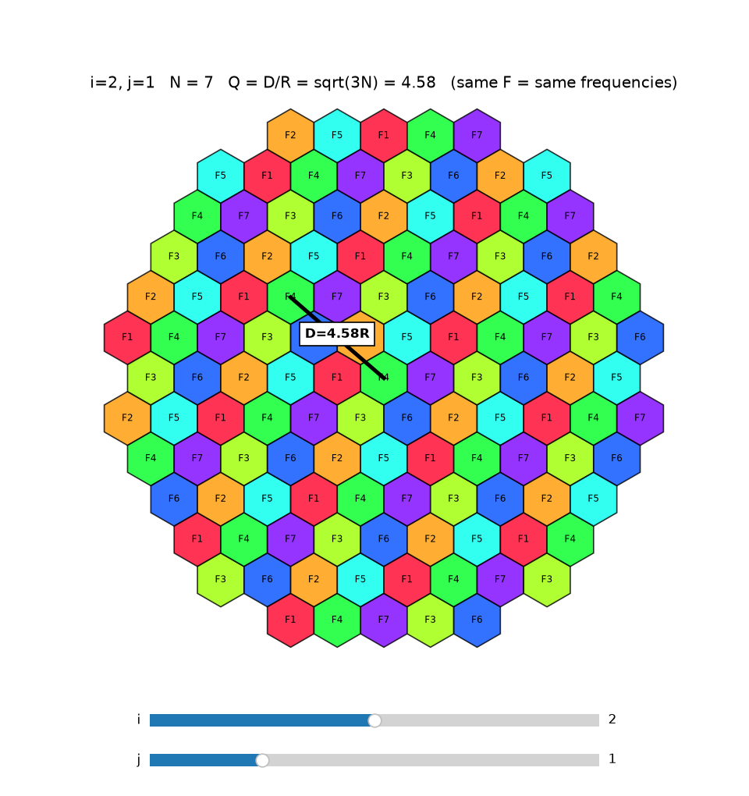
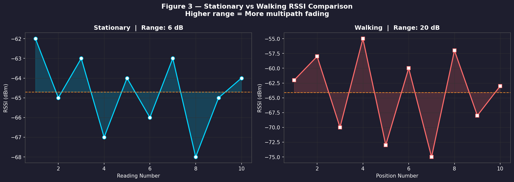
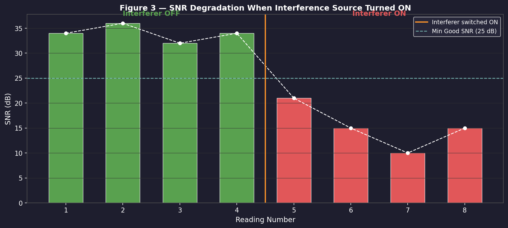

Experiment 1: EM Spectrum & Wireless Frequency Bands
Theory Theory
Electromagnetic Waves
Electromagnetic (EM) waves are waves that travel through space at the speed of light (c = 3×10⁸ m/s) and do not require any medium for propagation. They consist of oscillating electric and magnetic fields perpendicular to each other.
The relationship between frequency and wavelength is given by:
λ = c / f
where λ = wavelength (m), c = speed of light (3×10⁸ m/s), f = frequency (Hz)
This means — higher the frequency, shorter the wavelength.
Radio Frequency (RF) Spectrum
The RF spectrum is divided into bands based on frequency ranges. Each band has different propagation characteristics and applications:
Band
Full Form
Frequency Range
Application
LF
Low Frequency
30–300 kHz
Navigation, Ship Radio
MF
Medium Frequency
300 kHz–3 MHz
AM Radio
HF
High Frequency
3–30 MHz
Shortwave Radio
VHF
Very High Frequency
30–300 MHz
FM Radio, TV
UHF
Ultra High Frequency
300 MHz–3 GHz
4G, GPS, Bluetooth
SHF
Super High Frequency
3–30 GHz
Wi-Fi, Satellite
EHF
Extremely High Frequency
30–300 GHz
5G mmWave
Spectrum Allocation
Wireless spectrum is a limited natural resource managed by regulatory bodies (ITU globally, TRAI in India). Allocation types:
Licensed — Exclusive rights given to operators (e.g., 4G bands)
Unlicensed — Open for use without license (e.g., 2.4 GHz Wi-Fi, Bluetooth)
Shared — Used by multiple services under coordination
Wavelength Calculation Example
For Wi-Fi / Bluetooth operating at f = 2.4 GHz:
λ = c / f = 3×10⁸ / 2.4×10⁹ = 0.1250 m (12.50 cm)
This small wavelength allows compact antenna design in smartphones and routers.
Program — EM Spectrum RF Bands & Frequency vs Wavelength Code
Code:
exp1_spectrum.py
importpandasaspdimportmatplotlib.pyplotaspltimportnumpyasnpc=3e8data=[["LF",30e3,300e3],["MF",300e3,3e6],["HF",3e6,30e6],["VHF",30e6,300e6],["UHF",300e6,3e9],["SHF",3e9,30e9],["EHF",30e9,300e9],]bands=[d[0]fordindata]min_freqs=[d[1]fordindata]max_freqs=[d[2]fordindata]colors=["#4e79a7","#f28e2b","#e15759","#76b7b2","#59a14f","#edc948","#b07aa1"]# ── Figure 1 — EM Spectrum RF Bands ──fig,ax=plt.subplots(figsize=(14,4))fig.patch.set_facecolor("#1e1e2e")ax.set_facecolor("#1e1e2e")forband,fmin,fmax,colorinzip(bands,min_freqs,max_freqs,colors):ax.barh(0,np.log10(fmax)-np.log10(fmin),left=np.log10(fmin),height=0.6,color=color,edgecolor="white",linewidth=0.8)ax.text(np.log10(fmin)+(np.log10(fmax)-np.log10(fmin))/2,0,band,ha="center",va="center",fontsize=10,fontweight="bold",color="white")ax.set_xticks([4,5,6,7,8,9,10,11])ax.set_xticklabels(["10 kHz","100 kHz","1 MHz","10 MHz","100 MHz","1 GHz","10 GHz","100 GHz"],color="white",fontsize=9)ax.set_yticks([])ax.set_xlim(4,11.5)ax.tick_params(colors="white")forspineinax.spines.values():spine.set_edgecolor("#555")ax.set_title("Figure 1 — Electromagnetic Spectrum: RF Bands",color="white",fontsize=13,fontweight="bold",pad=12)plt.tight_layout()plt.savefig("fig1_spectrum_bands.png",dpi=150,bbox_inches="tight")plt.close()print("[Saved] fig1_spectrum_bands.png")# ── Figure 2 — Frequency vs Wavelength ──freqs=np.logspace(4,11.5,500)wls=c/freqsfig,ax=plt.subplots(figsize=(10,5))fig.patch.set_facecolor("#1e1e2e")ax.set_facecolor("#1e1e2e")ax.plot(freqs,wls,color="#00d4ff",linewidth=2)forfmin,fmax,color,bandinzip(min_freqs,max_freqs,colors,bands):ax.axvspan(fmin,fmax,alpha=0.15,color=color)ax.text((fmin+fmax)/2,c/((fmin+fmax)/2)*2.5,band,ha="center",fontsize=8,color=color,fontweight="bold")ax.axvline(2.4e9,color="yellow",linestyle="--",linewidth=1.2,label="2.4 GHz Wi-Fi/BT")ax.plot(2.4e9,c/2.4e9,"yo",markersize=8)ax.annotate(f" λ = {c/2.4e9:.4f} m",xy=(2.4e9,c/2.4e9),color="yellow",fontsize=9)ax.set_xscale("log")ax.set_yscale("log")ax.set_xlabel("Frequency (Hz)",color="white")ax.set_ylabel("Wavelength (m)",color="white")ax.set_title("Figure 2 — Frequency vs Wavelength (log scale)",color="white",fontsize=13,fontweight="bold")ax.tick_params(colors="white")ax.legend(facecolor="#2a2a3e",labelcolor="white",fontsize=9)ax.grid(True,which="both",color="#333",linewidth=0.5)forspineinax.spines.values():spine.set_edgecolor("#555")plt.tight_layout()plt.savefig("fig2_freq_vs_wavelength.png",dpi=150,bbox_inches="tight")plt.close()print("[Saved] fig2_freq_vs_wavelength.png")
A cellular network divides a large geographical area into small regions called cells. Each cell is served by a Base Station (BS). Since the available radio frequency spectrum is limited, the same frequencies cannot be assigned to every cell simultaneously.
To solve this, available channels are divided among a group of N cells called a cluster. The same frequency groups are then reused in every adjacent cluster across the coverage area. This is called frequency reuse.
Cluster Size Formula
The cluster size N is determined by two non-negative integers i and j:
Each cell within a cluster is assigned a unique frequency group (F1, F2, ... FN). Cells with the same frequency group in different clusters are called co-channel cells.
Reuse Distance
The distance between two nearest co-channel cells is called the reuse distance D. The normalized reuse distance is:
Q = D/R = √(3N)
where R = cell radius.
Observation Table
Sr.
N
i
j
D/R = √(3N)
Co-channel Neighbours
1
3
1
1
3.000
6
2
7
2
1
4.583
6
Calculations
Case 1 — N = 3 (i=1, j=1)
N = 1² + (1)(1) + 1² = 3
D/R = √(3×3) = √9 = 3
If R = 1 km → D = 3 km
Case 2 — N = 7 (i=2, j=1)
N = 2² + (2)(1) + 1² = 7
D/R = √(3×7) = √21 = 4.583
If R = 1 km → D = 4.583 km
Effect of Cluster Size
Cluster Size
Reuse Distance
Co-channel Interference
System Capacity
Small (N=3)
Less (3R)
More
Higher
Large (N=7)
More (4.58R)
Less
Lower
Key Tradeoff: Smaller N means frequencies are reused more often → higher capacity but more co-channel interference. Larger N reduces interference but reduces capacity.
Hexagonal Cell Shape
Hexagonal cells are preferred because:
They cover area with no overlap and no gaps
They approximate a circular coverage pattern
They require minimum number of cells to cover a given area
Each hexagonal cell has exactly 6 neighbours
Program — Interactive Frequency Reuse Visualizer Code
Code:
exp2_frequency_reuse.py
importnumpyasnpimportmatplotlib.pyplotaspltfrommatplotlib.patchesimportRegularPolygonfrommatplotlib.widgetsimportSliderfig,ax=plt.subplots(figsize=(8,8.5))plt.subplots_adjust(bottom=0.17)s_i=Slider(plt.axes([0.2,0.08,0.6,0.03]),"i",0,4,valinit=2,valstep=1)s_j=Slider(plt.axes([0.2,0.03,0.6,0.03]),"j",0,4,valinit=1,valstep=1)defdraw(_=None):i,j=int(s_i.val),int(s_j.val)ifi==j==0:returnN=i*i+i*j+j*jQ=np.sqrt(3*N)R=1.0ax.clear()cells,keys=[],{}forqinrange(-12,13):forrinrange(-12,13):x=np.sqrt(3)*R*(q+r/2)y=1.5*R*rifnp.hypot(x,y)>10:continuek=((q*(i+j)+r*j)%N,(r*i-q*j)%N)c=keys.setdefault(k,len(keys))cells.append((x,y,c))ax.add_patch(RegularPolygon((x,y),6,radius=R,fc=plt.cm.gist_rainbow(c/N),ec="k",alpha=0.8))ax.text(x,y,f"F{c+1}",ha="center",va="center",fontsize=7)x0,y0,c0=next(cforcincellsifc[0]==0andc[1]==0)near=min((cforcincellsifc[2]==c0andc[:2]!=(x0,y0)),key=lambdac:np.hypot(c[0]-x0,c[1]-y0))ax.plot([x0,near[0]],[y0,near[1]],"k-",lw=3)D=np.hypot(near[0]-x0,near[1]-y0)ax.text((x0+near[0])/2,(y0+near[1])/2,f"D={D:.2f}R",ha="center",fontweight="bold",bbox=dict(fc="w",ec="k"))ax.set_xlim(-10.5,10.5)ax.set_ylim(-10.5,10.5)ax.set_aspect("equal")ax.axis("off")ax.set_title(f"i={i}, j={j} N = {N} Q = D/R = √(3N) = {Q:.2f}"f" (same F = same frequencies)")fig.canvas.draw_idle()print(f"i={i} j={j} | N={N} | Q=√(3N)={Q:.2f} | "f"D measured={D:.2f}R | channels per cell=1/{N} | "f"reuse every {N} cells")s_i.on_changed(draw)s_j.on_changed(draw)draw()fig.savefig("exp2_reuse.png",dpi=120)plt.show()
Output:
i=2 j=1 | N=7 | Q=√(3N)=4.58 | D measured=4.58R | channels per cell=1/7 | reuse every 7 cells
Figure — Hexagonal Cell Frequency Reuse (N=7, i=2, j=1)

Experiment 7: Multipath Propagation & Signal Fluctuation
Theory Theory
Multipath Propagation
In real indoor wireless environments, a transmitted signal does not travel in a single straight path from transmitter to receiver. Instead, it undergoes reflection, scattering, and diffraction due to walls, furniture, and other obstacles. As a result, the receiver receives multiple delayed and attenuated copies of the same signal. This phenomenon is called multipath propagation.
Causes of Multipath
Reflection — Signal bounces off large smooth surfaces such as walls, metal doors, and glass windows.
Scattering — Signal is diffused in many directions by small or rough objects such as furniture and irregular surfaces.
Diffraction — Signal bends around the edges of obstacles such as corners and doorframes.
Effects of Multipath
When multiple copies of the signal arrive at the receiver with different delays and phases, they combine together. This recombination can produce:
Constructive Interference — Signal copies add in phase → received signal strength increases → higher RSSI.
Destructive Interference — Signal copies cancel each other → received signal strength decreases → lower RSSI.
This random variation in received signal strength is called multipath fading.
Received Signal Strength Indicator (RSSI)
RSSI is measured in dBm (decibels relative to 1 milliwatt). It indicates the power level of the received signal.
RSSI Value
Signal Quality
−50 to −60 dBm
Excellent
−60 to −70 dBm
Good
−70 to −80 dBm
Fair
Below −80 dBm
Poor
A more negative value means a weaker signal.
Stationary vs Walking Observation
Stationary position — Small RSSI fluctuation due to minor environmental changes.
Walking near reflective surfaces — Large RSSI fluctuation due to continuously changing multipath combinations.
The difference in fluctuation range between stationary and walking conditions confirms the presence and effect of multipath propagation.
Program — Stationary vs Walking RSSI Comparison Code
======================================================================
OBSERVATION TABLE 1 — STATIONARY RSSI
======================================================================
Reading No. Time (s) RSSI (dBm) Signal Quality
1 0 -62 Good
2 5 -65 Good
3 10 -63 Good
4 15 -67 Fair
5 20 -64 Good
6 25 -66 Fair
7 30 -63 Good
8 35 -68 Fair
9 40 -65 Good
10 45 -64 Good
Mean: -64.70 dBm | Fluctuation: 6 dB
======================================================================
OBSERVATION TABLE 2 — WALKING RSSI
======================================================================
Position No. Distance (m) RSSI (dBm) Interference
1 0.0 -62 Low
2 0.3 -58 Low
3 0.6 -70 High
4 0.9 -55 Low
5 1.2 -73 High
6 1.5 -60 Medium
7 1.8 -75 High
8 2.1 -57 Low
9 2.4 -68 Medium
10 2.7 -63 Medium
Mean: -64.10 dBm | Fluctuation: 20 dB
======================================================================
Conclusion: Walking causes 14 dB more fluctuation
— confirming multipath propagation effect.
[Saved] fig3_comparison.png
Figure 3 — Stationary vs Walking RSSI Comparison

Experiment 8: Noise & Interference in Wireless Systems
Theory Theory
Noise
Noise consists of random unwanted electrical fluctuations present in every wireless receiver. The most common type is thermal noise, which is generated by random motion of electrons in electronic components. Noise sets the minimum signal level a receiver can detect.
Interference
Interference is caused by unwanted signals from other transmitters operating on the same or nearby frequencies. Two main types:
Co-channel Interference — Another transmitter operating on the exact same frequency/channel. Most harmful type.
Adjacent-channel Interference — Transmitter on a nearby channel whose spectral energy leaks into the channel of interest.
Common sources in 2.4 GHz band: overlapping Wi-Fi networks, Bluetooth devices, microwave ovens, cordless phones.
Signal-to-Noise Ratio (SNR)
SNR = RSSI − Noise Floor
SNR Value
Signal Quality
≥ 40 dB
Excellent
25–40 dB
Good
15–25 dB
Fair
< 15 dB
Poor
Higher SNR → cleaner signal → better throughput and lower latency.
Effect of Interference
When an interference source is active, the noise floor rises, which directly reduces SNR even if RSSI remains the same. This leads to lower download/upload speeds, higher latency, and increased packet loss.
Program — SNR Degradation with Interferer ON/OFF Code
======================================================================
OBSERVATION TABLE 1 — CHANNEL COMPARISON
======================================================================
Condition Channel No. RSSI (dBm) Noise Floor(dBm) SNR (dB) Networks Visible Signal Quality
Low Interference 1 -58 -95 37 2 Good
High Interference 6 -61 -82 21 7 Fair
======================================================================
OBSERVATION TABLE 2 — SPEED & LATENCY
======================================================================
Condition Download (Mbps) Upload (Mbps) Latency (ms) Packet Loss (%)
Low Interference 45.2 22.4 12 0.2
High Interference 18.6 9.1 38 4.7
======================================================================
OBSERVATION TABLE 3 — INTERFERER ON/OFF
======================================================================
Reading No. Interferer State RSSI (dBm) Noise Floor (dBm) SNR (dB)
1 OFF -60 -94 34
2 OFF -59 -95 36
3 OFF -61 -93 32
4 OFF -60 -94 34
5 ON -65 -86 21
6 ON -68 -83 15
7 ON -71 -81 10
8 ON -69 -84 15
======================================================================
ANALYSIS SUMMARY
======================================================================
SNR (Clear channel) : 37 dB → Good
SNR (Congested) : 21 dB → Fair
SNR drop : 16 dB
SNR Interferer OFF avg : 34.0 dB
SNR Interferer ON avg : 15.2 dB
Conclusion: Interference reduces SNR by ~18.8 dB
[Saved] fig3_interferer_on_off.png
Figure — SNR Degradation When Interference Source Turned ON

Experiment 10: Basic Android Calculator App
Theory Theory
Android Overview
Android is an open-source mobile operating system developed by Google, based on the Linux kernel. Android applications are written in Java or Kotlin and run on the Android Runtime (ART).
Android App Structure
Every Android app has these key components:
Activity — A single screen with a user interface. MainActivity is the entry point of the app.
Layout — Defines the UI structure. Can be XML-based or created programmatically (as done in this experiment).
View — Basic UI building block (Button, TextView, etc.)
AndroidManifest.xml — Declares app components, permissions, and entry point.
UI Components Used
Component
Purpose
LinearLayout
Arranges views vertically or horizontally
GridLayout
Arranges buttons in a grid (4×5)
TextView
Displays the calculator output
Button
Each calculator key
ColorStateList
Sets button background colors
Calculator Logic
Display Update:
cur → number currently being typed
a → stored first operand
op → current operator (+, −, ×, ÷, %)
result = calculate(a, cur, op)
Operations Supported
Key
Action
0–9
Append digit to current number
.
Add decimal point (only one allowed)
C
Clear all — reset cur, op, a
⌫
Backspace — remove last character
+−×÷%
Store first number, save operator
=
Evaluate expression, show result
Programmatic UI (No XML)
In this experiment, the entire UI is built programmatically in Java without any XML layout file. This approach:
Gives full control over layout at runtime
Reduces dependency on layout inflater
Makes the app lightweight and fast
Button Color Scheme
Button Type
Color
Keys
Operators
Orange #FF9F0A
÷ × − + =
Functions
Grey #A5A5A5
C ⌫ %
Numbers
Dark #333333
0–9 .
Program — Android Calculator (Programmatic UI, No XML) Code